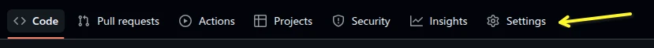
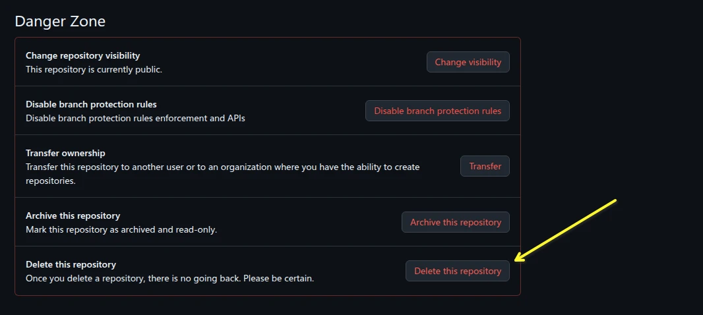
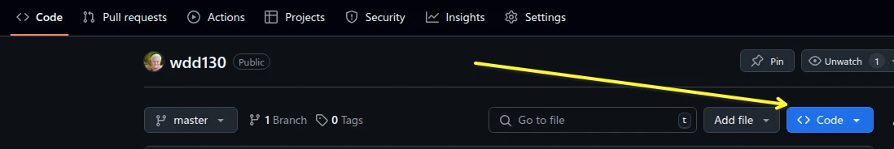
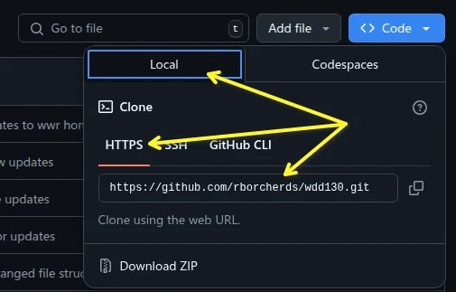

GitHub Features Recursos do GitHub Funciones de GitHub
GitHub is a powerful platform for version control and collaboration. Here are some of the key features that make it a popular choice among developers: GitHub é uma plataforma poderosa para controle de versão e colaboração. Aqui estão alguns dos principais recursos que o tornam uma escolha popular entre os desenvolvedores: GitHub es una plataforma poderosa para el control de versiones y la colaboración. Aquí están algunas de las funciones clave que lo convierten en una opción popular entre los desarrolladores:
How to delete a repository and reset VSCode Como excluir um repositório e redefinir o VSCode Cómo eliminar un repositorio y restablecer VSCode
To delete a repository you must go to the settings tab inside the repository on GitHub. Para excluir um repositório, você deve ir para a aba de configurações dentro do repositório no GitHub. Para eliminar un repositorio, debe ir a la pestaña de configuración dentro del repositorio en GitHub.

Once there, scroll to the very bottom of the page, you will see a section called "Danger Zone". Uma vez lá, role até o final da página e você verá uma seção chamada "Danger Zone". Una vez allí, desplácese hasta el final de la página y verá una sección llamada "Danger Zone".
Click on the "Delete this repository" button. Clique no botão "Delete this repository". Haga clic en el botón "Delete this repository".

Once you have clicked on the button, you will be asked to confirm that you want to delete the repository. Depois de clicar no botão, você será solicitado a confirmar que deseja excluir o repositório. Después de hacer clic en el botón, se le pedirá que confirme que desea eliminar el repositorio.
To confirm that you want to delete the repository, you must type the name of the repository in the text box. Para confirmar que deseja excluir o repositório, você deve digitar o nome do repositório na caixa de texto. Para confirmar que desea eliminar el repositorio, debe escribir el nombre del repositorio en el cuadro de texto.
Once you have typed the name of the repository, click on the "I understand the consequences, delete this repository" button. Depois de digitar o nome do repositório, clique no botão "I understand the consequences, delete this repository". Después de escribir el nombre del repositorio, haga clic en el botón "I understand the consequences, delete this repository".
You will be asked to enter your GitHub password as the items in the Danger Zone are administration activities and you must authenticate to use them. Você será solicitado a inserir sua senha do GitHub, pois os itens na Danger Zone são atividades de administração e você deve se autenticar para usá-los. Se le pedirá que ingrese su contraseña de GitHub, ya que los elementos en la Danger Zone son actividades de administración y debe autenticarse para usarlos.
Note that deleting a repository will delete all the issues, pull requests, and wiki pages associated with the repository. Observe que excluir um repositório excluirá todos os issues, pull requests e páginas de wiki associados ao repositório. Tenga en cuenta que eliminar un repositorio eliminará todos los issues, pull requests y páginas de wiki asociados al repositorio.
Also note that deleting a repository will not delete the local repository on your computer, so you will need to delete the local repository manually. Observe também que excluir um repositório não excluirá o repositório local no seu computador, portanto você precisará excluir o repositório local manualmente. Tenga en cuenta también que eliminar un repositorio no eliminará el repositorio local en su computador, por lo que deberá eliminarlo manualmente.
These steps unlinks your local folder with GitHub Estes passos desvinculam sua pasta local do GitHub Estos pasos desvinculan su carpeta local de GitHub
Open the root folder of the repository in VSCode. Abra a pasta raiz do repositório no VSCode. Abra la carpeta raíz del repositorio en VSCode.
Open a terminal in VSCode. On Windows you use Ctrl+` and on a MAC you use ⌃` or you can use the menu option VIEW - Terminal. Abra um terminal no VSCode. No Windows, use Ctrl+` e no MAC, use ⌃` ou pode usar a opção de menu VIEW - Terminal. Abra un terminal en VSCode. En Windows use Ctrl+` y en MAC use ⌃` o puede usar la opción de menú VIEW - Terminal.
Once the terminal is open, type the following command: Depois que o terminal estiver aberto, digite o seguinte comando: Una vez que el terminal esté abierto, escriba el siguiente comando:
On Windows: No Windows: En Windows:
Remove-Item .git -Recurse -ForceOn a Mac and Linux: Em um Mac e Linux: En un Mac y Linux:
rm .git -rfThese commands removes the tracking folder that GIT uses when syncing with GitHub. This hidden folder contains all the configuration information and tracking the changes to know what to sync with GitHub. Esses comandos removem a pasta de rastreamento que o GIT usa ao sincronizar com o GitHub. Esta pasta oculta contém todas as informações de configuração e rastreamento das alterações para saber o que sincronizar com o GitHub. Estos comandos eliminan la carpeta de seguimiento que GIT usa al sincronizar con GitHub. Esta carpeta oculta contiene toda la información de configuración y el seguimiento de los cambios para saber qué sincronizar con GitHub.
Now exit VSCode and open your file manager / File explorer and navigate to the folder where your local repository is located. Agora saia do VSCode e abra seu gerenciador de arquivos / Explorador de arquivos e navegue até a pasta onde seu repositório local está localizado. Ahora salga de VSCode y abra su administrador de archivos / Explorador de archivos y navegue hasta la carpeta donde está ubicado su repositorio local.
Now rename the folder to a new name. Agora renomeie a pasta para um novo nome. Ahora cambie el nombre de la carpeta a un nuevo nombre.
Go back to the course instructions Volte para as instruções do curso Vuelva a las instrucciones del curso
Go back to the course instructions, Step 2: Create Your Course Repository and follow the steps to create a new wdd130 repository. Volte para as instruções do curso, Passo 2: Crie seu Repositório do Curso e siga os passos para criar um novo repositório wdd130. Vuelva a las instrucciones del curso, Paso 2: Cree su Repositorio del Curso (Solo en inglés) y siga los pasos para crear un nuevo repositorio wdd130.
How to rename a repository Como renomear um repositório Cómo renombrar un repositorio
To rename a repository you must go to the settings tab inside the repository on GitHub. Para renomear um repositório, você deve ir para a aba de configurações dentro do repositório no GitHub. Para renombrar un repositorio, debe ir a la pestaña de configuración dentro del repositorio en GitHub.
Once there, you will see a section called "Repository name". Uma vez lá, você verá uma seção chamada "Repository name". Una vez allí, verá una sección llamada "Repository name".

Click on the name of the repository and change it to the new name. Clique no nome do repositório e mude-o para o novo nome. Haga clic en el nombre del repositorio y cámbielo al nuevo nombre.
Once you have changed the name, click on the "Rename" button to save the changes. Depois de ter alterado o nome, clique no botão "Rename" para salvar as alterações. Después de cambiar el nombre, haga clic en el botón "Rename" para guardar los cambios.
Note that renaming a repository will change the URL of the repository, so you will need to update any links to the repository. Observe que renomear um repositório mudará o URL do repositório, portanto você precisará atualizar quaisquer links para o repositório. Tenga en cuenta que renombrar un repositorio cambiará el URL del repositorio, por lo que deberá actualizar cualquier enlace al repositorio.
Also note that renaming a repository will not change the name of the local repository on your computer, so you will need to update the remote URL in your local repository. Observe também que renomear um repositório não mudará o nome do repositório local no seu computador, portanto você precisará atualizar o URL remoto no seu repositório local. Tenga en cuenta también que renombrar un repositorio no cambiará el nombre del repositorio local en su computador, por lo que deberá actualizar el URL remoto en su repositorio local.
To update the remote URL in your local repository, you can use the following command: Para atualizar o URL remoto no seu repositório local, você pode usar o seguinte comando: Para actualizar el URL remoto en su repositorio local, puede usar el siguiente comando:
git remote set-url origin new-url
Where new-url is the new URL of the
repository.
Onde new-url é o novo URL do
repositório.
Donde new-url es el nuevo URL del
repositorio.
You can find the new URL by going to the Code tab and then click on the <> Code button Você pode encontrar o novo URL indo para a aba Code e clicando no botão <> Code Puede encontrar el nuevo URL yendo a la pestaña Code y luego haciendo clic en el botón <> Code

Once you have clicked on the button, you will see a tab called Local, make sure it is selected. Then make sure HTTPS is selected and the URL will be shown. Depois de clicar no botão, você verá uma aba chamada Local, certifique-se de que está selecionada. Em seguida, certifique-se de que HTTPS está selecionado e o URL será mostrado. Después de hacer clic en el botón, verá una pestaña llamada Local, asegúrese de que esté seleccionada. Luego asegúrese de que HTTPS esté seleccionado y se mostrará el URL.
Click on the "Copy" button to copy the URL to your clipboard. The copy button is the icon to the right of the URL. You can then just paste the URL into the terminal where you are typing your command. Clique no botão "Copy" para copiar o URL para a área de transferência. O botão de copiar é o ícone à direita do URL. Você pode então colar o URL no terminal onde está digitando seu comando. Haga clic en el botón "Copy" para copiar el URL al portapapeles. El botón de copiar es el ícono a la derecha del URL. Luego puede pegar el URL en el terminal donde está escribiendo su comando.

For example, if you renamed your repository from
wdd130 to wdd130-old, the new URL would be
https://githubusername.github.io/wdd130-old.
Por exemplo, se você renomeou seu repositório de
wdd130 para wdd130-old, o novo URL seria
https://githubusername.github.io/wdd130-old.
Por ejemplo, si renombró su repositorio de
wdd130 a wdd130-old, el nuevo URL sería
https://githubusername.github.io/wdd130-old.
This is the full command you would type remember to use your GitHub Username Este é o comando completo que você digitaria, lembre-se de usar seu nome de usuário do GitHub Este es el comando completo que escribiría, recuerde usar su nombre de usuario de GitHub
git remote set-url origin https://githubusername.github.io/wdd130-oldTo check the remote URL of your local repository, you can use the following command: Para verificar o URL remoto do seu repositório local, você pode usar o seguinte comando: Para verificar el URL remoto de su repositorio local, puede usar el siguiente comando:
git remote -vHow to change a repository visibility Como alterar a visibilidade de um repositório Cómo cambiar la visibilidad de un repositorio
To change a repository visibility you must go to the settings tab inside the repository on GitHub. Para alterar a visibilidade de um repositório, você deve ir para a aba de configurações dentro do repositório no GitHub. Para cambiar la visibilidad de un repositorio, debe ir a la pestaña de configuración dentro del repositorio en GitHub.
Once there, you will see a section called "Danger Zone". Uma vez lá, você verá uma seção chamada "Danger Zone". Una vez allí, verá una sección llamada "Danger Zone".
Click on the "Change repository visibility" button. Clique no botão "Change repository visibility". Haga clic en el botón "Change repository visibility".
Once you click on the button, you will see the option attached to the button to change to the opposite of what the current visibility is. If it is private, you will see "Change to Public". Depois de clicar no botão, você verá a opção anexada ao botão para mudar para o oposto da visibilidade atual. Se for privado, você verá "Change to Public". Después de hacer clic en el botón, verá la opción adjunta al botón para cambiar al opuesto de la visibilidad actual. Si es privado, verá "Change to Public".
You will then be prompted to verify you want to make the change and you may have to enter your password to verify you identity and make the change. GitHub will only ask for your password about every 2 hours from the last time you entered the password. Você será solicitado a verificar se deseja fazer a alteração e pode ter que inserir sua senha para verificar sua identidade e fazer a alteração. O GitHub só pedirá sua senha a cada 2 horas aproximadamente desde a última vez que você inseriu a senha. Luego se le pedirá que verifique que desea realizar el cambio y es posible que deba ingresar su contraseña para verificar su identidad y realizar el cambio. GitHub solo pedirá su contraseña aproximadamente cada 2 horas desde la última vez que ingresó la contraseña.